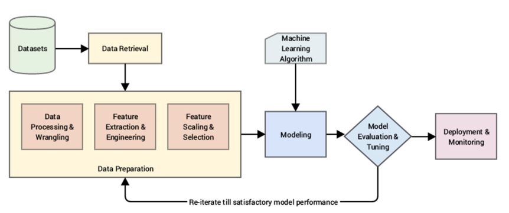

Machine Learning Pipeline
The best way to solve a real-world Machine Learning or analytics problem is to use a Machine Learning pipeline starting from getting your data to transforming it into information and insights using Machine Learning algorithms and techniques.
